Русская кухня
-
Борщ
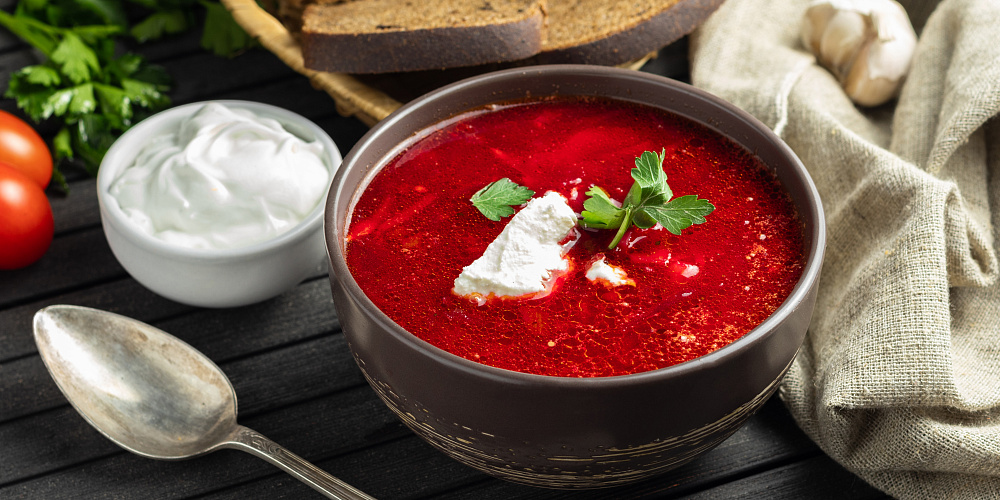Борщ — горячий заправочный суп на основе свёклы, которая придаёт ему характерный красный цвет. Является основным первым блюдом нашей страны.
-
Окрошка

Окрошка — традиционный холодный суп русской кухни, который готовят в весенне-летний период. Обязательными компонентами окрошки являются хлебный (ржаной, ячменный) квас, свежие огурцы, укроп, растёртый с солью зелёный лук, столовая горчица, крутое яйцо и сметана. В переносном смысле слово «окрошка» употребляется в значении «смесь, смешение разнородных понятий и предметов».
-
Пюре с котлетками

Котлеты - это мясное блюдо из фарша в виде лепёшки. Отличным гарниром для котлет, служит картофельное пюре, приготовленное из тертого отварного картофеля и молока.
-
Бутерброд
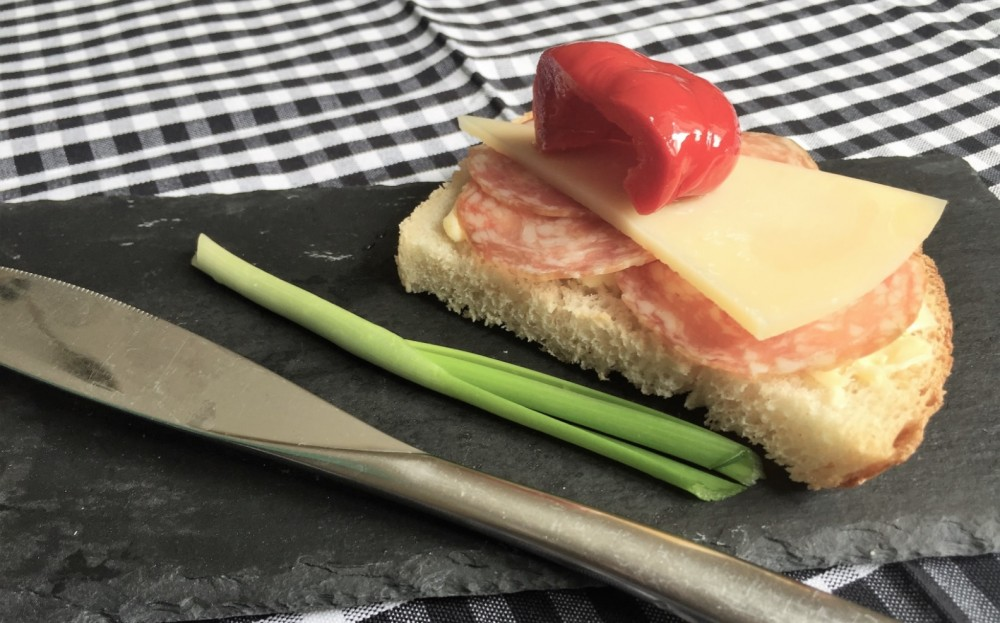Бутерброд — ломтик хлеба или булки с намазанной или уложенной сверху начинкой из какого-либо продукта, готового к употреблению (например масла, сыра, колбасы) или их сочетания. Популярный вид закуски благодаря простоте приготовления, удобству поедания и переноски.
-
Картошка в мундире

Картофель в мундире — картофель, подвергшийся для своего приготовления термической обработке целиком, без очистки от кожуры. Горячий картофель в мундире подаётся в качестве гарнира к рыбе или мясу и очищается от кожуры руками за столом. Также существуют специальные вилки для очистки картофеля.
-
Пельмени
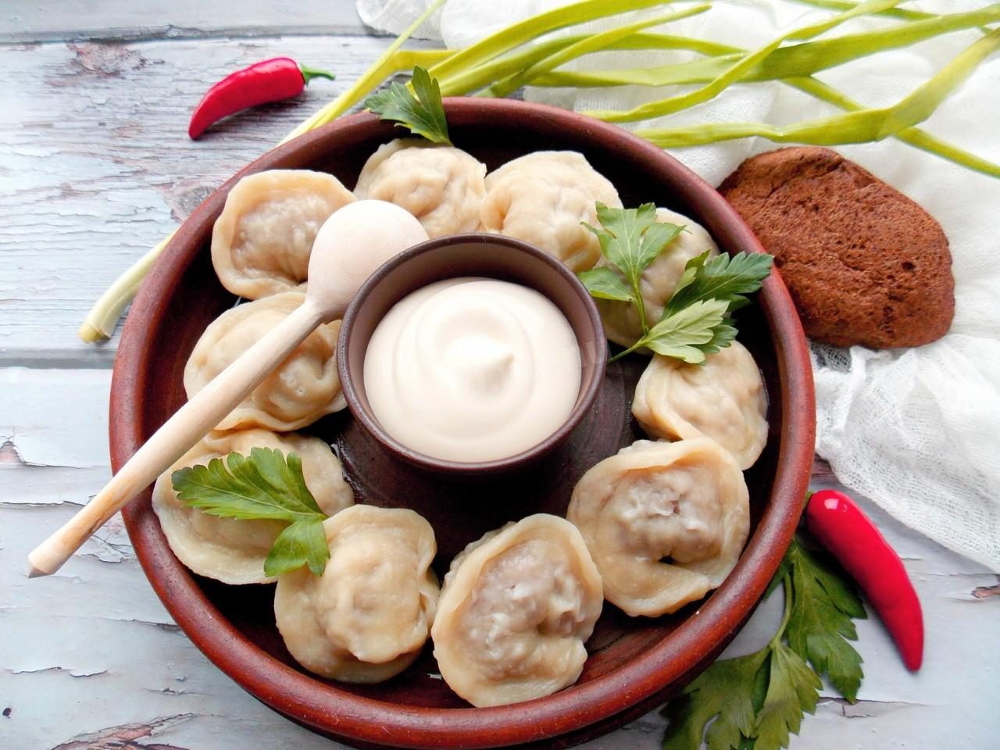Пельмени — блюдо, распространённое в традиционной кухне народов Северной Евразии: русской, удмуртской, коми и некоторых других финно-угорских народов. Изготавливаются в виде термически обработанных изделий из пресного теста с начинкой из рубленого мяса или рыбы.
-
Драники
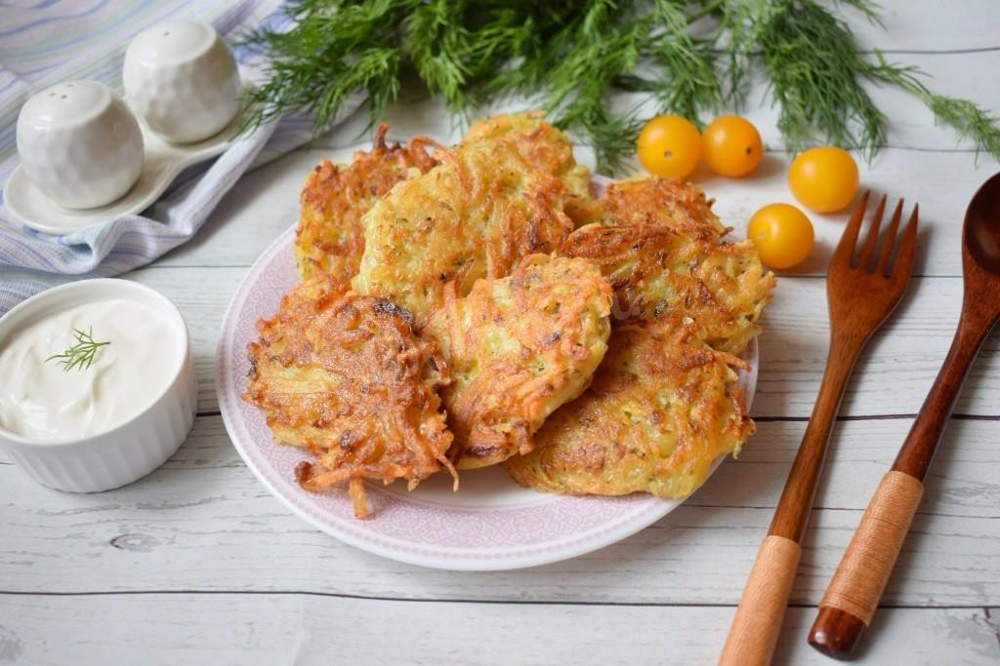Драники готовят из натёртого или давленного сырого картофеля с добавлением соли и яиц. Также добавляется мука — для связывания крахмала. По вкусу могут добавляться другие ингредиенты — например, лук, чеснок. Полученное тесто перемешивают и жарят на сковороде на растительном масле. В СССР широкое распространение получило приготовление драников с начинкой из фарша по примеру голубцов.
-
Шашлык
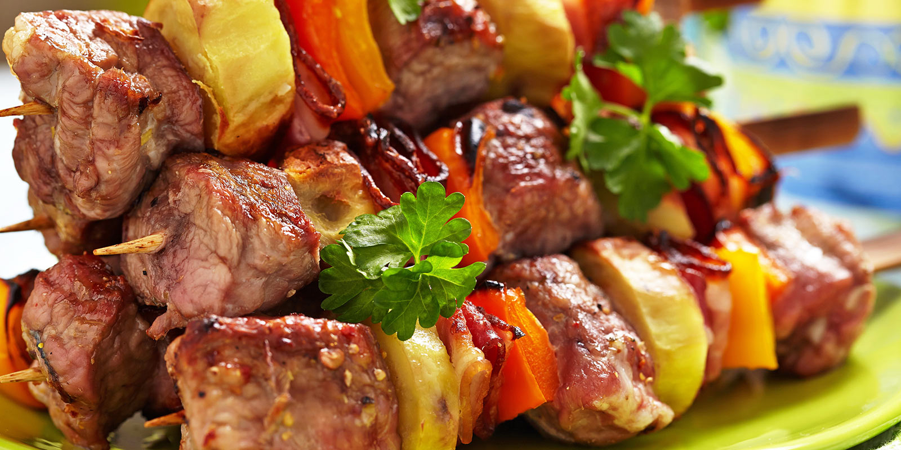Шашлык — изначально блюдо стран Западной и Центральной Азии, а также Восточной Европы, из баранины мелкой нарезки, нанизанное на шампур и запечённое на древесном угле в мангале; при этом возможно применение маринада, от простейших специй (соль, чёрный перец, уксус) до сложных многокомпонентных составов, требующих особого приготовления. Позже название «шашлык» в русском языке распространилось на блюда из свинины, птицы, рыбы, овощей, грибов, приготовленные тем же способом.
Иностранная кухня
-
Лазанья
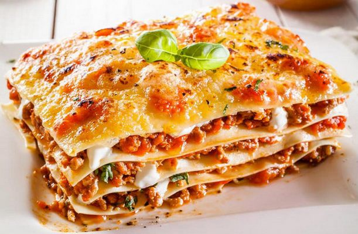Лазанья — макаронное изделие, тонкий лист теста в форме квадрата или прямоугольника, а также блюдо итальянской кухни, традиционно приготовляемое из тонких листов теста (собственно и называющихся лазанья) со слоями различной начинки. Наиболее традиционной начинкой для лазаньи считается начинка на основе рагу с мясным фаршем, залитым соусом бешамель и посыпанным сыром пармезан.
-
Бургер

Гамбургер (сокр. бургер) — это блюдо, обычно состоящее из котлеты из измельченного мяса, как правило, говядины, помещенной внутрь нарезанной булочки.
-
Паста Карбонара

Спагетти карбонара – самая известная традиционная итальянская паста в мире. Карбонара – это нежный сырно-яичный соус, обволакивающий пасту, вперемешку с сочным, поджаренным беконом. Все это присыпано сыром пармезан и черным молотым перцем
-
Ролл Филадельфия
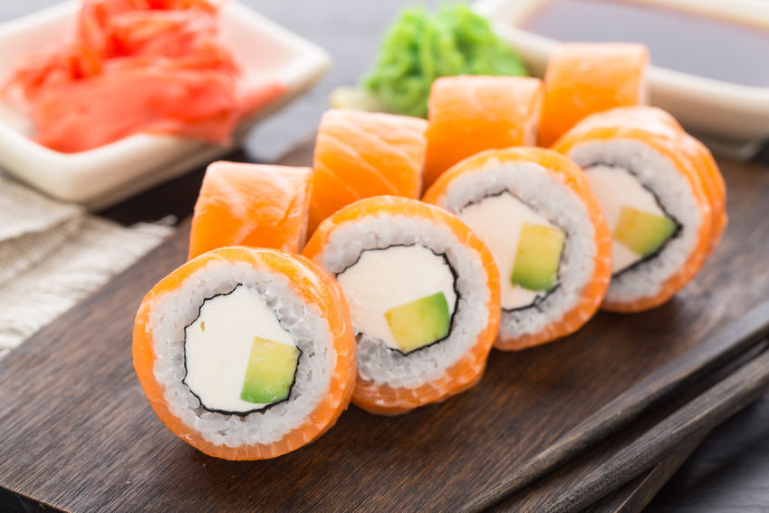Ролл Филадельфия отличают две особенности: изысканный вкус и питательность. Нежное сочетание классических ингредиентов: риса, слабосоленого лосося и сыра филадельфия покорило сердца многих ценителей японской кухни. Название ролла «Филадельфия» происходит от бренда сливочного сыра Филадельфия.
-
Ребрешки BBQ
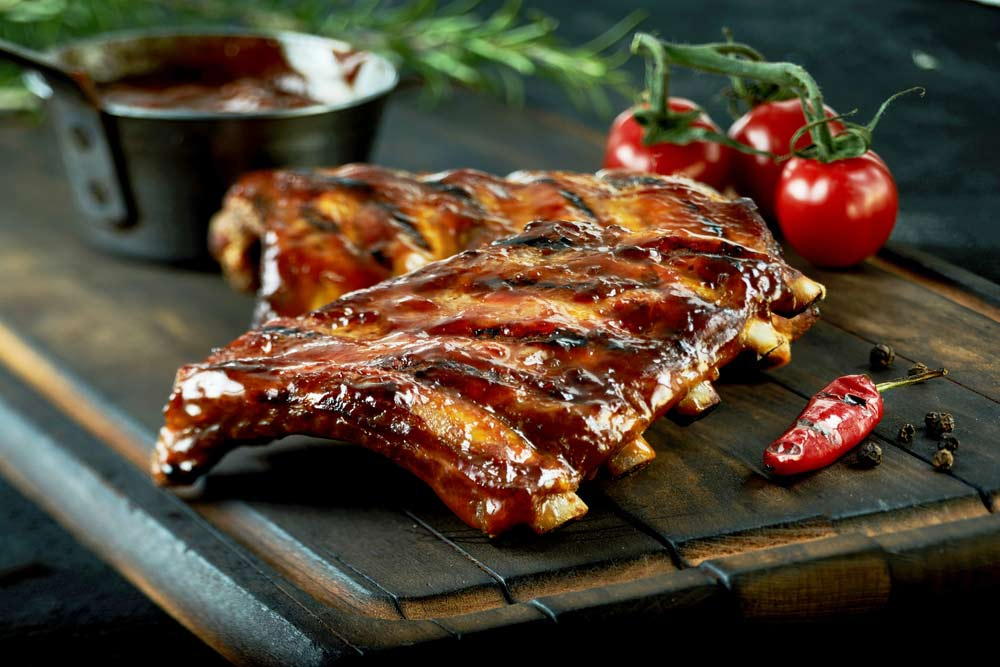Под термином «барбекю» в США подразумевается техника приготовления, предполагающая долгое томление мяса при низкой температуре с дымком от поленьев. Процесс приготовления проходит на открытом воздухе. Обычно, когда говорят о барбекю, имеют в виду гриль, а также специальное приспособление для жарки мяса. Такой вид готовки обеспечивают мясу особый копчёный вкус. Свиные ребрешки BBQ готовят на основе данного способа приготовления, а также маринуя мясо в соусе BBQ.
Десерты и выпечка
-
Торт Наполеон
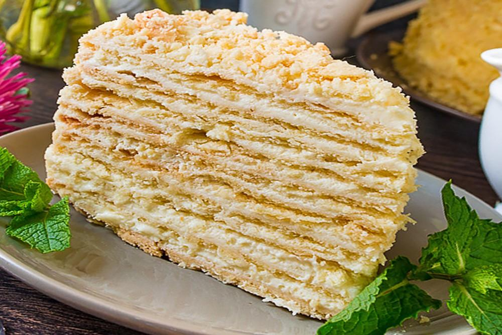Наполеон — торт с масляным или заварным кремом. В России и других странах бывшего СССР, а также скандинавских странах используется название «наполеон», происхождение которого неясно. Одна из версий — искажение французского слова napolitain («неаполитанский»).
-
Пицца
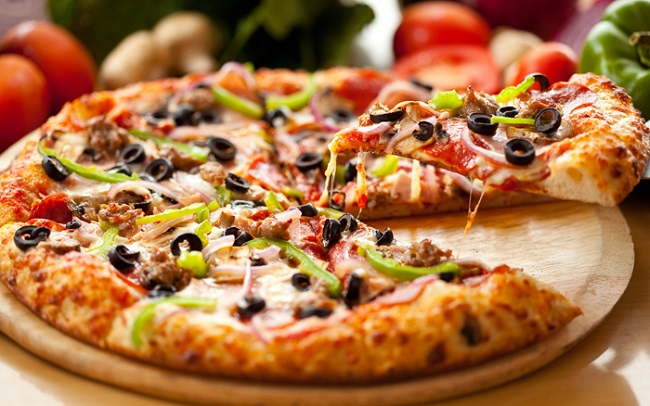Пицца — традиционное итальянское блюдо в виде круглой дрожжевой лепёшки, выпекаемой с уложенной сверху начинкой из томатного соуса, сыра и зачастую других ингредиентов, таких как мясо, овощи, грибы и других продуктов. Небольшую пиццу иногда называют пиццеттой.
-
Ватрушки
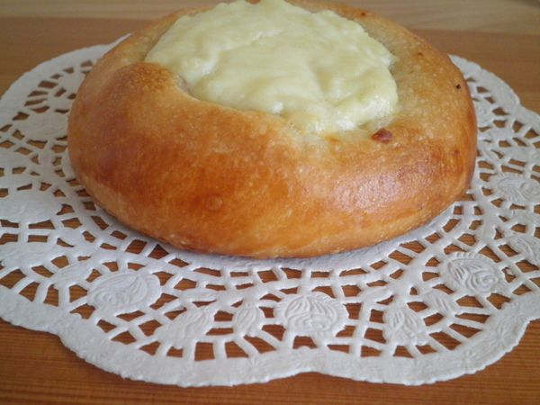Ватрушка — выпечное изделие из сдобного дрожжевого теста в виде лепёшки, в середине которой находится начинка как правило из творога, реже из варенья или повидла. Также их часто называют сметанниками. Изделие древнеславянской, русской и украинской кухонь.
-
Пирожки с картошкой
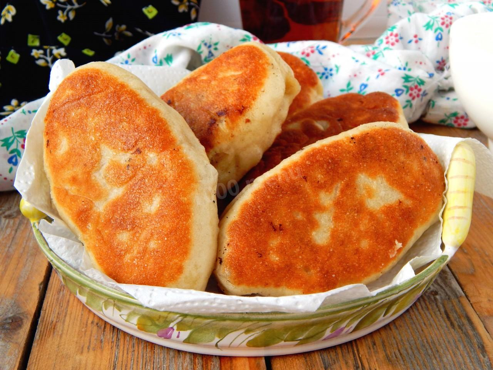Пирожок — небольшое кулинарное изделие из дрожжевого, пресного или слоёного теста с начинкой внутри, которое выпекают в печи или жарят во фритюре. Форма печёных пирожков «лодочкой» (удлинённо-приплюснутая с заострёнными концами) или овальная, жареных пирожков — овально-приплюснутая или «полумесяцем».
-
Выпечка из Пятерочки(которая нравится половине нашей группы)
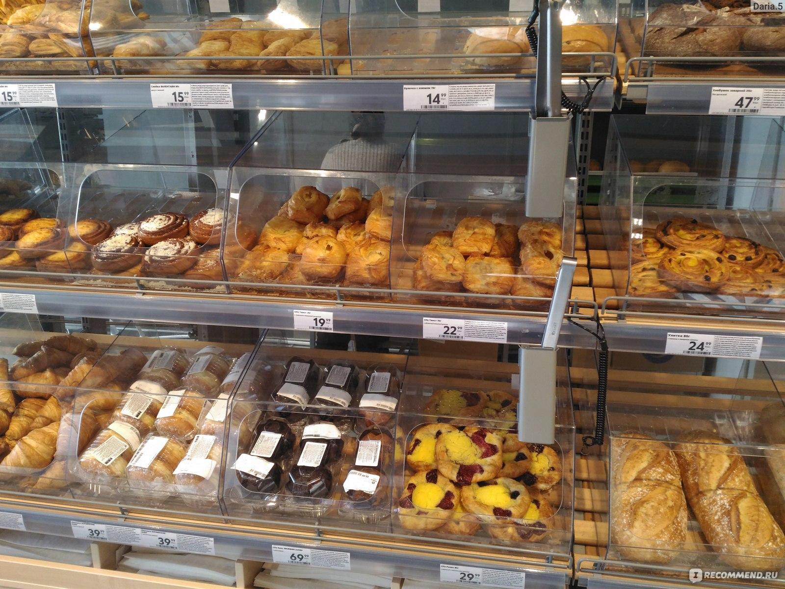Данная выпечка обладает исключительным вкусом, и за счет низкой стоимости, она превращается из обычного перекуса, в настоящий и полный обед для студента. Она дает при употреблении необычайные способности, например после перекуса слойкой, можно сдать мат. анализ с первого раза.
Напитки
-
Кисель
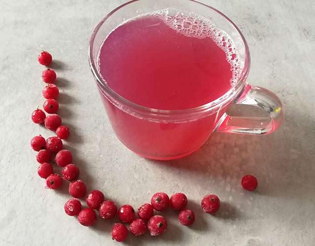Фруктово-ягодный сладкий кисель — сладкое десертное желеобразное или жидкое третье блюдо, приготавливаемое из свежих и сушеных фруктов и ягод, фруктово-ягодных соков, сиропов, варенья, молока с добавлением картофельного или кукурузного крахмала, сахара или мёда. Кисель быстр в приготовлении. Большинство киселей готовится с добавлением сахара. Обычно в фруктово-ягодные кисели добавляют картофельный крахмал, а в молочные и миндальные — кукурузный. Быстрое вливание разведённого крахмала в кипящий раствор обеспечивает однородность киселя.
-
Американо

Американо — способ приготовления кофе, заключающийся в соединении определённого количества горячей воды и эспрессо. Существует популярное, но неподтвержденное мнение, что этот напиток придумали в Италии во время Второй мировой войны для американцев как аналог американского популярного фильтрового напитка «регуляр». Общим у этих двух напитков были лишь большой объём и не очень концентрированный вкус.
-
Какао
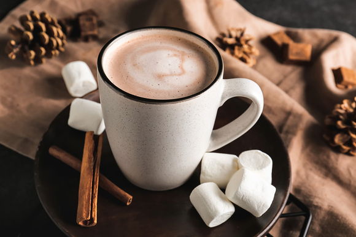Любимый напиток детства многих людей. Какао — напиток, в состав которого обязательно входит размолотое какао, а также молоко (или вода) и сахар.
-
Черный чай
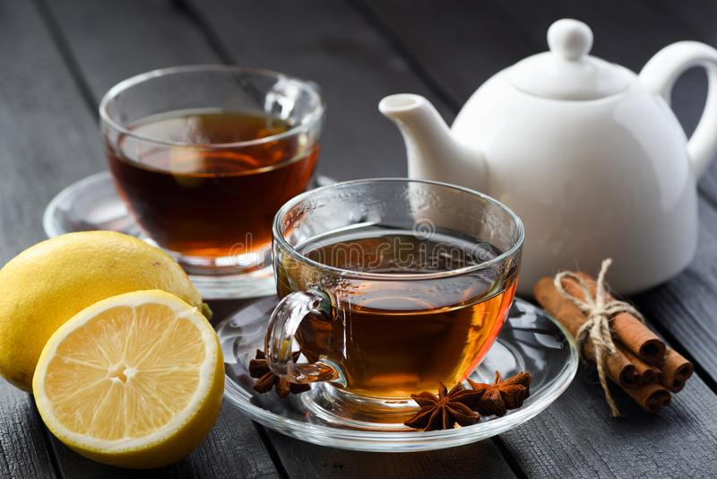Напиток покоривший сердца многих школьников и студентов. Прост,вкусен,полезен.
-
Sprite
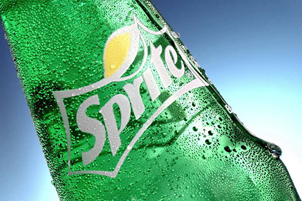Sprite — газированный безалкогольный напиток со вкусом лайма и лимона, принадлежащий американской компании The Coca-Cola Company. Sprite был создан, чтобы конкурировать в первую очередь с 7 Up.